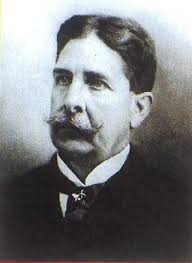
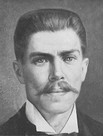

Historia del Día del Ingeniero
En Colombia, el Día del Ingeniero se celebra el 17 de agosto, en conmemoración de la
creación de la Sociedad Colombiana de Ingenieros (1887) y como reconocimiento al aporte
de esta profesión al desarrollo del país.
Ramas de la Ingeniería
- Ingeniería Civil
- Ingeniería de Sistemas
- Ingeniería Mecánica
- Ingeniería Eléctrica
- Ingeniería Industrial
Aportes de la Ingeniería
- Infraestructura: Construcción de carreteras, puentes, aeropuertos, presas y sistemas de transporte.
- Tecnología: Desarrollo de software, hardware, telecomunicaciones e innovación digital.
- Energía: Generación y distribución de electricidad (hidroeléctrica, térmica, solar, eólica).
- Salud: Creación de equipos médicos, prótesis, sistemas de diagnóstico y biotecnología.
- Industria: Automatización, maquinaria, procesos de producción y optimización de recursos.
- Medio ambiente: Tratamiento de aguas, gestión de residuos, energías limpias y sostenibilidad.
- Sociedad: Mejora de la calidad de vida mediante soluciones prácticas y seguras para las necesidades humanas.
Ingenieros Colombianos Destacados
| Ingeniero | Función / Aporte | Foto |
|---|---|---|
| Francisco Javier Cisneros | Fue un ingeniero civil colombo-venezolano que dirigió importantes proyectos ferroviarios en Colombia en el siglo XIX, como el Ferrocarril de Antioquia. |  |
| Julio Garavito Armero | Reconocido ingeniero, astrónomo y matemático colombiano; sus estudios sobre la mecánica celeste fueron fundamentales. Su rostro aparece en el billete de 20.000 pesos. |  |
| Guillermo González Zuleta | Considerado pionero en la ingeniería estructural en Colombia; diseñó importantes edificios y obras civiles del siglo XX. | .jpg) |
Retos Actuales de la Ingeniería
La ingeniería enfrenta hoy grandes desafíos globales que requieren innovación y responsabilidad. Entre ellos destacan la lucha contra el cambio climático mediante tecnologías sostenibles y energías limpias, el desarrollo de ciudades inteligentes e infraestructura resiliente, y la transformación digital con inteligencia artificial, automatización y ciberseguridad. También son claves los avances en salud a través de la ingeniería biomédica, así como garantizar la ética, la equidad y el acceso a la tecnología. Estos retos exigen soluciones creativas, multidisciplinarias y comprometidas con el bienestar social y ambiental.
Frases Célebres sobre la Ingeniería
- "La ciencia puede divertirnos y fascinarnos, pero es la ingeniería la que cambia el mundo." — Isaac Asimov
- "Los ingenieros, como arquitectos del mundo moderno, construyen el futuro con las ideas del presente." — Anónimo
- "La ingeniería es el arte de dirigir los grandes recursos de la naturaleza para uso y conveniencia del hombre." — Thomas Tredgold
- "Un buen ingeniero es una persona que hace un diseño que funciona con el mínimo costo y máxima eficiencia." — Freeman Dyson
- "La ingeniería es imaginar lo que nunca ha sido y preguntar: ¿por qué no?" — Theodore von Karman
- "No hay límites para lo que la ingeniería puede lograr, excepto los de nuestra propia imaginación." — Anónimo